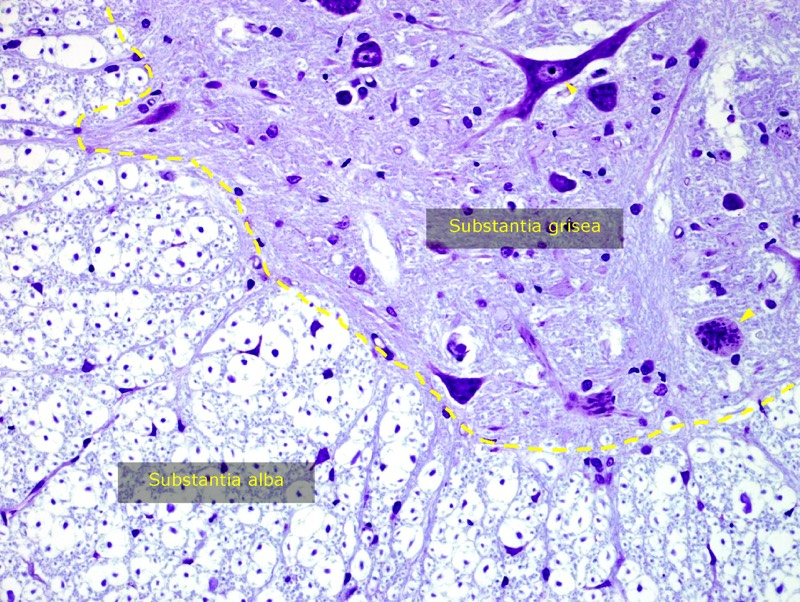

Centraal zenuwstelsel:
Het centraal zenuwstelsel omvat de hersenen en het ruggenmerg.
Kenmerkend voor het CZS is dat het bestaat uit witte stof (substantia alba) en grijze stof (substantia grisea). Beiden bestaan uit neuronale elementen en gliacellen. Merk op dat er enkel bindweefsel terug te vinden is rond bloedvaten.
Het centraal zenuwstelsel omvat de hersenen en het ruggenmerg.
Kenmerkend voor het CZS is dat het bestaat uit witte stof (substantia alba) en grijze stof (substantia grisea). Beiden bestaan uit neuronale elementen en gliacellen. Merk op dat er enkel bindweefsel terug te vinden is rond bloedvaten.

Deze dwarse doorsnede van ruggenmerg toont de substantia alba (witte stof) en de substantia grisea (grijze stof). Merk op dat de witte stof voornamelijk een verzameling is van gemyeliniseerde zenuwvezels die in banen of tracti verlopen en ook dwars zijn doorgesneden. De witte kleur van de witte stof is afkomstig van het hoge vetgehalte in de myelineschede. Verder vind je in witte stof gliacellen terug. In de grijze stof vind je veel minder gemyeliniseerde zenuwvezels terug, maar wel perikarya (pijlpunten), dendrieten, beginsegmenten van axonen en veel neuroglia. Op deze plaats vinden we ook de meeste synaptische contacten.
Vordering zelfstudie zenuwweefsel: